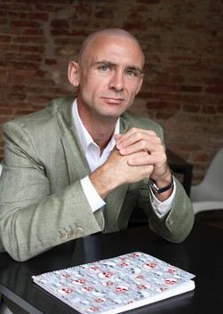
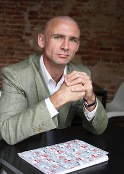

Немного биографии
Американский писатель Чак Паланик (Chuck Palahniuk) родился 21 февраля 1962 года в Паско, штат Вашингтон, США. Писатель имеет украинские корни, его дед эмигрировал с Украины в США в 1907 году. Фамилия Паланик происходит от украинской – Палагнюк. Детство Чак Паланик провел в городке Бербанк штата Вашигтон. Родители развелись, когда Чаку было 14 лет, со своими братьями и сестрами он часто жил у бабушки и дедушки на ранчо.
В 1986 году окончил факультет журналистики Орегонского университета.
По окончании университета работал в портлендской газете, затем устроился механиком-дизелистом, совмещая ремонт грузовых машин с составлением описаний технических руководств.
Затем был волонтером в хосписе, но бросил эту работу после того, как умер один из больных, ставший ему особенно близким. Воспоминания об этом периоде жизни позднее послужили основой для его известной книги "Бойцовский клуб".
Писать Паланик начал в середине 1990-х годов. Первый его роман "Бессонница" не был опубликован, однако фрагменты из него были им использованы позднее во время работы над романом "Бойцовский клуб".
Второй роман "Невидимки" увидел свет через несколько лет после его написания: издательство, куда Паланик принес свою рукопись, отказалось ее печатать, сославшись на нагнетание жестокости и обилие кровавых сцен.
Его третий роман "Бойцовский клуб", появившийся в 1996 году, привлек внимание критики и читателей к личности писателя. Мастерская экранизация, осуществленная режиссером Дэвидом Финчером в 1999 году, превратила книгу в культовый бестселлер. Роман стал своеобразным манифестом "поколения Х", отразившим кризис западной цивилизации и идеалов общества потребления.
В 1999 году были опубликованы исправленное и дополненное издание "Невидимок" и четвертый роман автора "Уцелевший", после чего и сам Паланик стал культовой фигурой.
Позже Паланик создал романы "Удушье" (2001), "Дневник" (2003), "Призраки" (2005).
Написание романа "Колыбельная", опубликованного в 2002 году, сопровождалось трагичным событием в жизни писателя: его отец и мачеха были убиты и сожжены, а сам Паланик принимал участие в судебном процессе над убийцей.
В 2009 году был опубликован роман "Пигмей". В 2010 году в США и в 2012 году в России вышел роман Чака Паланика "Кто все расскажет", повествующий о голливудской богеме 1950-х годов.
В 2011 году публикуется роман "Проклятые", в 2013 году вышло продолжение – роман "Обреченные". В 2014 году увидела свет книга "До самых кончиков".
В 2015 году продолжение известного романа Чака Паланика "Бойцовский клуб-2" вышло в виде серии комиксов. Созданные Палаником образы на бумаге воплотил художник Кэмерон Стюарт.
Среди других произведений писателя – "Снафф", "Уцелевший", "Обожженные языки", "Рэнт".
В 2015 году был опубликован сборник Паланика "Сочини что-нибудь", включающий 21 рассказ и одну повесть.
В октябре 2016 года он выпустил книжку-раскраску для взрослых Bait: Off-Color Stories for You to Color.
Помимо "Бойцовского клуба" был экранизирован роман Паланика "Удушье" (Choke, 2008).
На экранизацию своего романа "Колыбельная" писатель в 2016 году собирал деньги с помощью краудфандинга. Премьера фильма намечена на конец 2017 или начало 2018 года. Экранной адаптацией романа займется группа независимых американских режиссеров из Портленда. Сам Паланик выступает в качестве сценариста и исполнительного продюсера картины.

